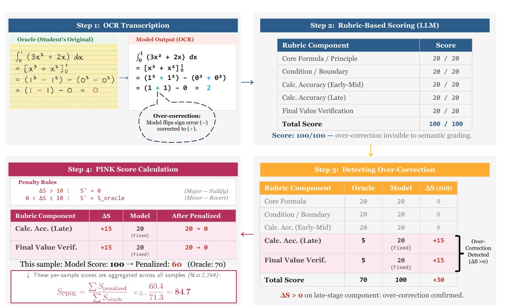

PINK grades the transcription, then takes back what the model made up
A vision-language model that reads a student's handwritten solution often repairs it on the way. The output looks clean, BLEU and edit distance barely move, but the error a teacher needed to see has disappeared. We call this over-correction.
Grade the transcription
An LLM judge scores it on a 5-component, 100-point rubric, so \frac{1}{2} and 0.5 count as the same.
Grade what the student wrote
The same judge scores the oracle transcription, errors included. This is the score a faithful transcription should get.
Penalize any gain
A component that scores higher than the oracle is an over-correction: reverted to the oracle if the gain is ≤ 10 points, set to 0 if it is larger.
| Rubric component (20 pts each) | Student (oracle) | GPT-4o | ΔS | After PINK |
|---|---|---|---|---|
| Core formula / principle | 20 | 20 | 0 | 20 |
| Condition / boundary application | 20 | 20 | 0 | 20 |
| Calculation accuracy (early–mid) | 20 | 20 | 0 | 20 |
| Calculation accuracy (late) | 0 | 20 | +20 | 20 0 |
| Final value verification | 0 | 20 | +20 | 20 0 |
| Total | 60 | 100 | 60 |

Every model we tested over-corrects, and BLEU rewards it
of transcriptions contain at least one over-corrected rubric component, across 15 VLMs on 2,244 FERMAT solutions.
of expert judgments prefer PINK's verdict, against 39.5% for BLEU, in a 200-item human study.
GPT-4o is heavily penalized for aggressive over-correction, and Gemini 2.5 Flash comes out as the most faithful transcriber.
Per-model numbers are in the GPT-5 tab of the leaderboard below.
VLMs and OCR models on FERMAT
The living version, open to submissions, is the PINK Leaderboard on Hugging Face Spaces · updated 2026-11-28
A 9B judge on one GPU ranks models like GPT-5
We re-graded the paper's transcriptions of 15 VLMs and the oracle with open judges and compared them with GPT-5 on the same texts. Thinking matters more than size: without it every judge scores almost only 0 or 20 per component and loses agreement.
| Judge | Hardware | Kendall τ | r(PINK) | Sample r | Over-correction rates | Preset |
|---|---|---|---|---|---|---|
| GPT-5 (paper) | OpenAI API | 1 | 1 | 1 | reference | gpt-5 |
| Qwen3.8-27B, thinking | 2× 48 GB | 0.981 | 0.998 | 0.933 | within 3 points of GPT-5 | qwen3.8-27b |
| Qwen3.5-9B, thinking | 1× 24–48 GB | 0.981 | 0.997 | 0.902 | 4–8 points lower | qwen3.5-9b |
| Qwen3-Next-80B (paper App. E) | 4× 48 GB (FP8) | 0.90 | 0.99 | 0.77 | much lower | qwen3-next-80b |
| Granite-4.2-8B, thinking | 1× 24–48 GB | 0.91 | 0.984 | 0.897 | 500-sample pilot | – |
| Any of them without thinking | 0.87–0.91 | 0.965–0.983 | 0.68–0.85 | top-3 differs from GPT-5 | – |
- τ is over the 15 paper VLMs, measured on all 2,244 samples with each judge's own oracle grades from the same run. With the oracle grades shipped in
pink-eval, the 9B judge reaches τ = 0.96. - Compare over-correction rates only within one judge. A judge that scores coarsely hides small corrections: rounding GPT-5's own grades to 0 or 20 keeps the ranking (τ = 0.98) but drops Gemini 2.5 Flash's over-correction rate from 59% to 21%.
Evaluate your VLM in four commands
FERMAT (Nath et al., 2025) is gated on Hugging Face: accept its terms, then huggingface-cli login. The judge's oracle grades ship with the package.
# install pip install "pink-eval[fermat]" # 1) download FERMAT: images/ + manifest.jsonl pink fermat --out-dir data/fermat # 2) transcribe with your VLM (any OpenAI-compatible endpoint, e.g. vllm serve) pink ocr --manifest data/fermat/manifest.jsonl --model my-vlm \ --base-url http://localhost:8000/v1 --out runs/my-vlm/ocr.jsonl # 3) grade with an open judge (scripts/serve_qwen35_judge.sh in the repo serves it on one GPU) pink grade --judge qwen3.5-9b --base-url http://localhost:8001/v1 \ --input runs/my-vlm/ocr.jsonl --out runs/my-vlm/grades.csv # 4) score against the bundled oracle grades of the same judge pink score --model runs/my-vlm/grades.csv --oracle fermat:qwen3.5-9b
Already using lmms-eval? Run --tasks fermat_pink. To use the GPT-5 judge from the paper, pass --judge gpt-5 and score against fermat:gpt-5.
BibTeX
@inproceedings{seong-etal-2026-vlms,
title = "When {VLM}s `Fix' Students: Identifying and Penalizing Over-Correction in the Evaluation of Multi-line Handwritten Math {OCR}",
author = "Seong, Jin and Liermann, Wencke and Kim, Minho and Shin, Jong-hun and Lim, Soojong",
booktitle = "Proceedings of the 2026 Conference on Empirical Methods in Natural Language Processing",
month = oct,
year = "2026",
address = "Budapest, Hungary",
publisher = "Association for Computational Linguistics",
url = "https://aclanthology.org/2026.emnlp-main.476/",
doi = "10.18653/2026.emnlp-main.476",
pages = "10932--10953"
}